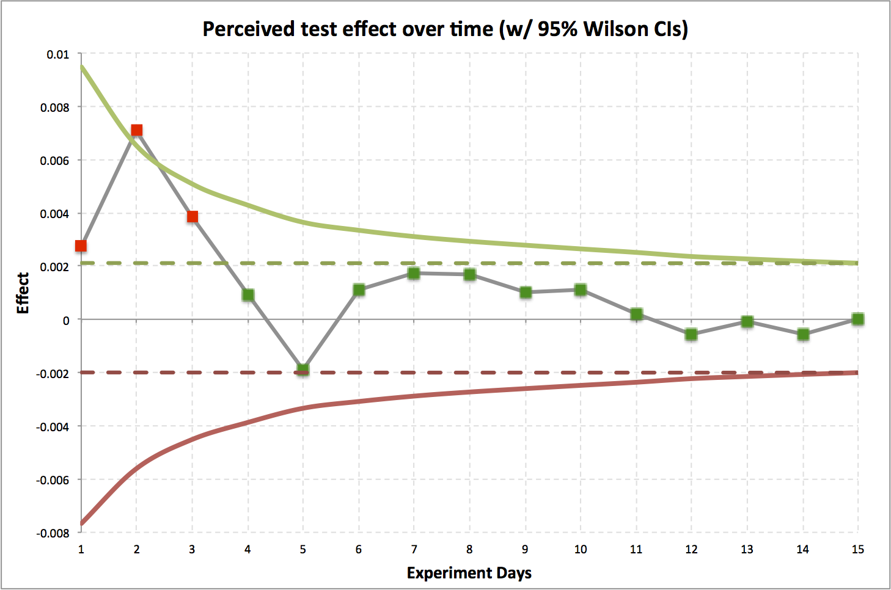
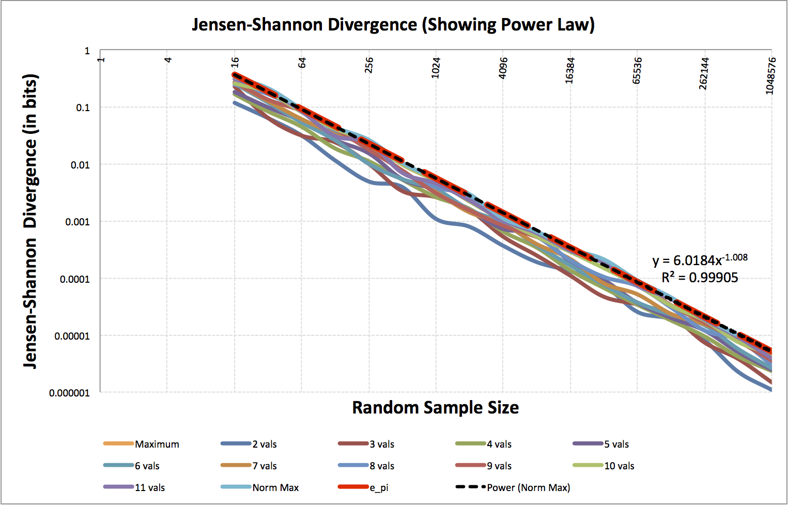
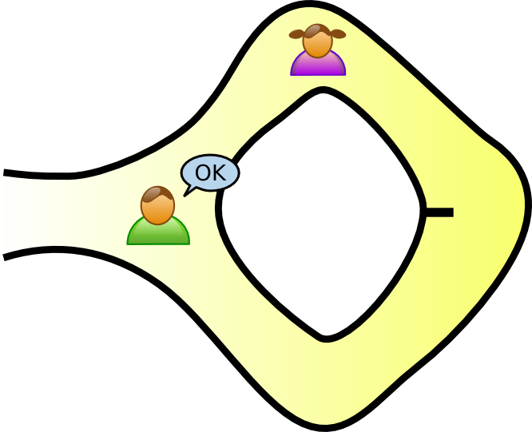
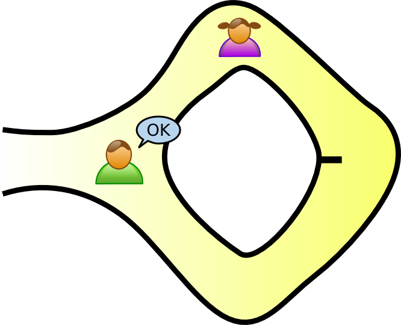

Testing in an unsure world
(Less intimidating than uttering "stochastic ")
Ryan Deak / @deaktator
Topics
A/B Testing
Controlled experiment testing the efficacy of treatment versus a control group.
There are a lot of gotchas! If you're not heeding the advice of Kohavi, et al., your probably hosing yourself!
* Do yourself a favor and head to exp-platform.com after reading this presentation.
A/B Testing Advice
- Know what you want to be able to detect (power).
- Lock in your expectations before starting the test!
- Don't jump to conclusions (mat).*
- Use A/A Testing to validate testing itself.
*Any figure that looks interesting or different is usually wrong!
A/B Testing Gotcha Example
- Actual Data
- Gray line is effect of treatment.
- Green / Red lines are 95% CIs.
- Dotted lines are 95% CIs at end of test.
A/B Testing Gotcha Example
- Results jump around a lot in the first days.
- In the first few days, we might mistakenly think there is a statstically significant effect (red).
- Over time, converges to no effect, stays in CIs (green).
- Actually an A/A test.
A/B Testing Gotcha Example Explained
The chance of a day's data falling outside the 95% CI at the end of the experiment is one minus the size of the CI at experiment end divided by the CI for the day in question.
A/B Testing Gotcha Example Explained
For this example, on the first day:
\[1-\frac { size \ of \ interval \ between \ dotted \ lines }{ size \ of \ interval \ between \ solid \ lines } \]
\[0.76=1-\frac { 0.0021 - -0.0020 }{ 0.0095 - -0.0077 } \]
Chance of falling outside final confidence based: 76%
Early Stopping
- If you must consider early stopping, it's important to note that this fundamentally changes the type of test.
- This is actually a multiple testing procedure.
- Requires corrections to the critical values.
References
ASIDE: Wilson confidence intervals
\[ { w }^{ - }=max\left\{ 0,\frac { 2n\hat { p } +{ { z }_{ \alpha } }^{ 2 }-\left( { { z }_{ \alpha } }\sqrt { { { z }_{ \alpha } }^{ 2 }-\cfrac { 1 }{ n } +4n\hat { p } \left( 1-\hat { p } \right) +\left( 4\hat { p } -2 \right) } +1 \right) }{ 2\left( n+{ { z }_{ \alpha } }^{ 2 } \right) } \right\} \]
\[ { w }^{ + }=min\left\{ 1,\frac { 2n\hat { p } +{ { z }_{ \alpha } }^{ 2 }+\left( { { z }_{ \alpha } }\sqrt { { { z }_{ \alpha } }^{ 2 }-\cfrac { 1 }{ n } +4n\hat { p } \left( 1-\hat { p } \right) -\left( 4\hat { p } -2 \right) } +1 \right) }{ 2\left( n+{ { z }_{ \alpha } }^{ 2 } \right) } \right\} \]
\( \hat { p } \) = sample proportion = \( \frac { number \ of \ "successes" }{ number \ of \ events } \)
\( n \) = sample size
\( { z }_{ \alpha } \) = z-score for the chosen \( \alpha \) level.
\( \alpha \) is the allowable false-positive rate (type I error rate)
ASIDE: Jeffreys confidence intervals
I like the Jeffreys interval (but slighly harder to compute).
/** Get the Jeffreys confidence interval.
* Requires maven dependency: org.apache.commons:commons-math3:3.3
* @param n The number of impressions, attempts, or whatever.
* @param s The number of successes. s <= n, by definition.
* @param alpha alpha (0.05 creates 95% CI)
* @return Tuple of lower and upper bound
*/
def jeffreysCI(n: Long, s: Long, alpha: Double = 0.05) = {
import org.apache.commons.math3.distribution.BetaDistribution
val z = alpha / 2
val beta = new BetaDistribution(s + 0.5, n - s + 0.5)
(
beta.inverseCumulativeProbability(z),
beta.inverseCumulativeProbability(1 - z)
)
}
For More Testing Gotchas Explained ...
Topics
Testing distribution similarity
- "Distances"
-
Tests
- Kolmogorov-Smirnov test
- Cramér-von Mises test
- Deak test
Kullback-Leibler divergence
Discrete case
\[ { D }_{ KL }\left( P\parallel Q \right) =\sum _{ i }{ \ln { \left( \frac { P\left( i \right) }{ Q\left( i \right) } \right) P\left( i \right) } } \]
Continuous case
\[ { D }_{ KL }\left( P\parallel Q \right) =\int _{ -\infty }^{ \infty }{ \ln { \left( \frac { P\left( x \right) }{ Q\left( x \right) } \right) P\left( x \right) dx } } \]KL divergence: What is it?
It is an information-theoretic measure of the difference between probability distributions \(P\) and \(Q\).
Specifically:
“[It's] a measure of the information lost when Q is used to approximate P”
KL divergence: What it's not?
KL divergence is NOT a:
Jensen–Shannon divergence
A symmetric, bounded (proper metric) variant of KL divergence.
\[ JSD\left( P\parallel Q \right) =\frac { { D }_{ KL }\left( P\parallel M \right) }{ 2 } + \frac { { D }_{ KL }\left( Q\parallel M \right) }{ 2 } \]
where
\[ M = \frac{ P + Q }{ 2 } \]
Jensen–Shannon divergence
When measured in bits: \( JSD\left( P\parallel Q \right) \in \left[ 0,1 \right] \)
When measured in nats: \( JSD\left( P\parallel Q \right) \in \left[ 0,\ln { 2 } \right] \)
I like \( JSD \) much better than \( D_{ KL } \) because of this!
Wasserstein metric / Earth mover's distance
“Intuitively, if each distribution is viewed as a unit amount of "dirt" piled on M, the metric is the minimum "cost" of turning one pile into the other, which is assumed to be the amount of dirt that needs to be moved times the distance it has to be moved.”
Aside: Konrad Rieck is Cool!
- Rieck and Laskov, Linear-Time Computation of Similarity Measures for Sequential Data. JMLR, 2008.
- Rieck, Laskov, and Sonnenburg, Computation of Similarity Measures for Sequential Data using Generalized Suffix Trees. NIPS, 2007.
- Konrad Rieck, Similarity Measures for Sequential Data. WIREs: Data Mining and Knowledge Discovery, 2011.
Tests
- Kolmogorov-Smirnov test
- Cramér-von Mises test
- Deak test
Kolmogorov-Smirnov test
Lot's of math, simple concept.
Is the KS stat, \( D_{ n,n^{ \prime } } \), above the threshold for the desired \( \alpha \)?
If so, the distributions are not the same.
// Cumulative distribution function, given a PDF (or PMF)
def cdf(pdf: Seq[Double]) = pdf.scanLeft(0.0)(_+_).tail
// Computes the Kolmogorov-Smirnov stat between two PDFs, p and q.
// Not the most efficient. Don't use this in prod!
def kolmogorovSmirnovStatistic(p: Seq[Double], q: Seq[Double]) =
(cdf(p) zip cdf(q)).map{ case(pi, qi) => math.abs(pi - qi) }.max
Kolmogorov-Smirnov Threshold
\[ D_{ n,n^{ \prime } } > c\left(\alpha\right) \sqrt { \frac { n+{ n }^{ \prime } }{ n { n }^{ \prime } } } \]
where \(n\) and \(n^{ \prime }\) are sample sizes of distributions \(P\) and \(Q\)
\(c\left(\alpha\right)\) is
| \(\alpha\) | 0.10 | 0.05 | 0.025 | 0.01 | 0.005 | 0.001 |
| \(c\left(\alpha\right)\) | 1.22 | 1.36 | 1.48 | 1.63 | 1.73 | 1.95 |
Cramér-von Mises test
The two sample Cramér–von Mises is easier to understand than (the wikipedia page of) the Kolmogorov-Smirnov test.
How out of position are the ranked samples of the two distributions when combined?
Gotcha: Assumes no duplicates in data. This is pretty reasonable when comparing continuous distributions but is likely unrealistic for discrete distributions. Common fix is the "midrank approach" (Ruymgaart, 1980).
Deak test
Distributions \(P\) and \(Q\) are the same only if \[ JSD\left( P\parallel Q \right) < \alpha\min { { \left( n,{ n }^{ \prime } \right) }^{ \beta } } \]
\(n\) and \(n^{ \prime }\) are sample sizes of distributions \(P\) and \(Q\).
\(JSD\) is Jensen-Shannon divergence in bits.
Empirically, \(\alpha = 6.0184\), \(\beta = -1.008\)
I think maybe, \( \alpha \overset { ? }{ = } \frac { e\pi }{ \sqrt { 2 } } \approx 6.0385 \).
I'm not sure about \(\beta\).
Deak test threshold derivation
-
FOR \(v\) in 2 .. 11
-
FOR \(s\) in 1 .. 200
- Randomly create a theoretical distribution \( D_{v,s}\) with \(v\) possible values and select associated probabilities randomly
-
FOR \(k\) in \(2^{p}\) for \(p\) in 0 .. 20
- Randomly sample \(k\) samples from \( D_{v,s}\) and record the empirical distribution \(E_{v,s,k}\). Compute and store \( JSD\left(D_{v,s}, E_{v,s,k}\right) \).
- Store the \(\max JSD\) at each value of \(k\) for each value of \(v\).
-
FOR \(s\) in 1 .. 200
Deak test threshold derivation
At the end of the sampling procedure, we have a bunch of triples (number of values in distribution \(v\), number of samples \(s\) taken from the distribution, Jensen-Shannon divergence).
Determine the power-law relationship via regression.
Deak test

Topics
Probing to determine equality
- We have two sets of corresponding things.
- We want to compare the corresponding things from the two sets to determine if the sets are the same.
- Assume differences (of corresponding items) are i.i.d..
Aside: For the gamblers
How many dice rolls after the come out until the shooter "seven outs"?
Probing to determine equality
Q: What do you want to be able to detect (effect size)?
e.g.: Errors at a rate of at least \( \frac { 1 }{ 1000000 } \)
Q: When I say there's no difference,
what guarantees do we want?
(statistical power, sensitivity)
e.g.: Guarantee I'm right 99.9% of the time.
Answer: Geometric Distribution
The geometric distribution is the probability distribution of the number \( X \) of Bernoulli trials needed to get one success.
CDF: \( F\left( X\le k \right) =1-{ \left( 1-p \right) }^{ k } \)
\[ \Leftrightarrow \\ { \left( 1-p \right) }^{ k }=1-y\\ \Leftrightarrow \\ \log { { \left( 1-p \right) }^{ k } } =\log { 1-y } \\ \Leftrightarrow \\ k\log { 1-p } =\log { 1-y } \\ \Rightarrow \]
inverse CDF: \( F^{ -1 }\left( y \right) =\left\lceil \frac { \log { 1-y } }{ \log { 1-p } } \right\rceil \)
So, how many samples?
- To detect error rates of at least 1 in 1,000,000.
- Have a false negative rate ( \( \beta \) ) of at most 0.1%?
\[\begin{aligned} F^{ -1 }\left( y=0.999;p=\frac { 1 }{ 1000000 } \right) =\left\lceil \frac { \log { \left( 1-0.999 \right) } }{ \log { \left( 1-\frac { 1 }{ 1000000 } \right) } } \right\rceil \\ F^{ -1 }\left( y=0.999;p=\frac { 1 }{ 1000000 } \right) =\left\lceil \frac { \log { 0.001 } }{ \log { 0.999999 } } \right\rceil \\ \end{aligned} \]
\( F^{ -1 }\left( y=0.999;p=\frac { 1 }{ 1000000 } \right) \) = 6,907,752
Topics
Testing laws
Q: What's a law?
A: Something that always holds
(\( \forall x\in \Omega \), where \( \Omega \) is the domain).
Q: Can I have an example?
A: All functor instances obey functor laws!
Q: How do we test always?
A: Test that random domain instances adhere to the law.
Testing laws
- One counterexample invalidates the law (on the domain)!
- Testing multiple random instances decreases the possibility of a non-oracle repeatedly guessing correctly (That's why there is more than one question on the SAT).
- Think zero-knowledge proofs from crytography.
Aside: What's a Z-K proof?
Tree Example
Aside: What's a Z-K proof?
Cave Example

 

Testing laws
Look at projects like scalaz and how they test functors.
They use projects like ScalaCheck.
So what's ScalaCheck?
So What's ScalaCheck?
“ScalaCheck is a tool for testing Scala and Java programs, based on property specifications and automatic test data generation.”
So What's ScalaCheck?
“The basic idea is that you define a property that specifies the behaviour of a method or some unit of code, and ScalaCheck checks that the property holds.”
So What's ScalaCheck?
“All test data are generated automatically in a random fashion, so you don't have to worry about any missed cases.”
This is cool stuff. You should use this!
Testing objective functions
Recently, I (re)discovered a few ways to change the objective function for bipartite matching to provide some more desirable behaviors.
Produce matchings with more edges, more vertices, etc.
Testing objective functions
We can rigorously prove optimality, but:
“the difference between theory and practice is greater in practice than in theory.”
Testing objective functions
How can we test the code?
Randomly! (Seriously?, pay attention!)
Testing objective functions
for bipartite matching
Constructing the graph
- Randomly construct a complete bipartite graph with the desired number of nodes on the left and right.
- Randomly assign integer-valued edge weights with the desired integer range.
- Randomly shuffle edges list and remove the first K edges to achieve the desired graph density.
- Remove any vertices with indegree or outdegree 0.
Testing objective functions
for bipartite matching
-
FOR EACH test, \( i \in \left\{ 1,2,\dots ,N \right\} \) :
- generate a random graph \( G_{ i } \), via the previous slide.
- \( S_{ i } \leftarrow \) randomly perturbed optimization over \( G_{ i } \)
-
FOR EACH objective function under test, \( F \):
- \( { G }_{ i,F }^{ \prime }\leftarrow \) optimize over \( G_{ i } \) for \( F \) (where \( { G }_{ i,F }^{ \prime } \subseteq G_{ i } \)).
- \( S_{ i } \leftarrow S_{ i } \cup { G }_{ i,F }^{ \prime } \)
-
FOR EACH \( { G }_{ i,F }^{ \prime } \in S_{ i } \):
- IF for the criterion, \( C_{ F } \) that \( F \) should optimize, \( { G }_{ i,F }^{ \prime }\notin arg\max { { C }_{ F }\left( { G }_{ i } \right) } \)
- THEN RETURN FAIL
- RETURN SUCCESS
Testing objective functions
for bipartite matching
So what have we done?
We checked \( N \) times that the optimization functions are truly the best at what they are supposed to do. We checked all of the algorithms objective functions against each other and checked them all against a random objective function.
Each random test gets us a little closer to believing that our objective functions work as desired.
If any test fails, we know the optimization function doesn't really truly work as expected!
Topics
Wrap Up
Showed a bunch of situations involving:
- Non-random testing of (pseudo) randomized behaviors.
- (Pseudo) randomized testing of non-random behaviors.
For more, see: Using Randomness to Solve Non-random Problems at MIT Open Courseware.